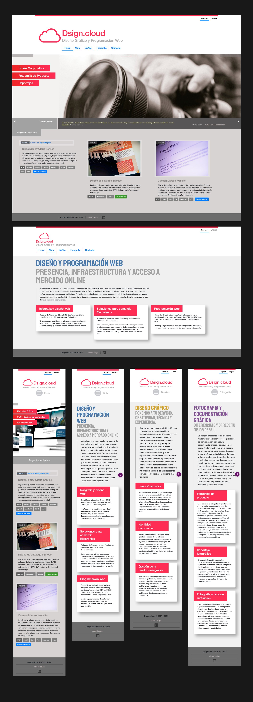
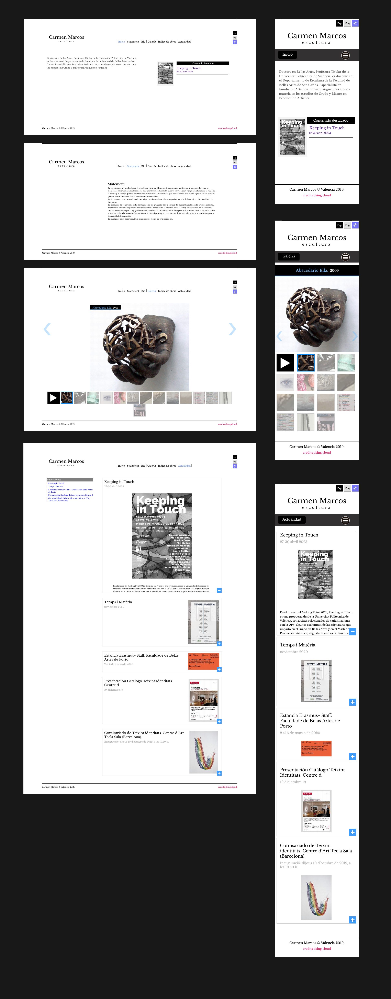
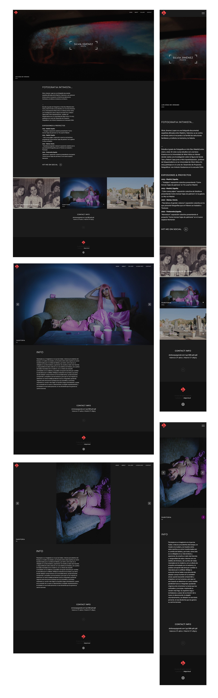
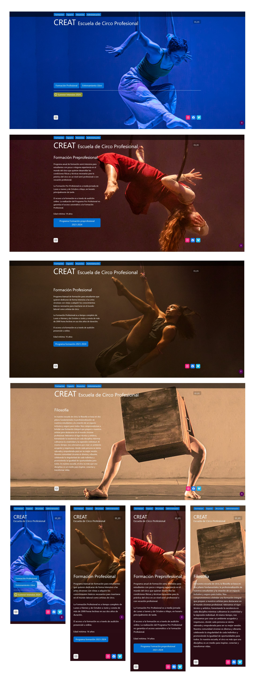

RESPONSIVE WEB
Interface design for multiple devices.
UI design and front-end build · Mobile-first · 2019–2024 · 1 corporate portal, 1 application component and 4 websites.
Archive note
Projects built between 2019 and 2024, shown from the original designs. Several sites have changed since or are no longer online, so they are not linked. Client names are omitted.
What is shown is the adaptation logic across widths, not the current state of each site.
Approach and methods
I design and build starting from the mobile column: first deciding which content goes first and what can wait; each wider breakpoint adds columns, enlarges images or exposes navigation that is collapsed on mobile. Adaptation is defined in the design, not left to the build: each component has its breakpoints and behaviour documented. Three reference widths:
Core technologies
Tested in browser developer tools and on real devices, in both orientations.
Component design
Toolbar with customisable options for corporate software: a web application with high complexity and data density. The exercise shows how a component is designed with its responsive behaviour in mind from the start: one structure with three views —desktop, tablet and mobile— triggered at set width breakpoints.
The structure has three blocks. A and C have fixed widths; B takes the centre and grows as needed. B groups actions, shortcuts and notifications, separated from each other, and is customisable: from the user menu each person adds or removes shortcuts and subscribes to the general channel or to specific notification channels. Its length is not predictable. The logo sits on its own top row: as the bar narrows, the icons move under the logo up to the menu before being grouped.
Quality control
Shrinking the bar does not make mobile suitable for everything. Some business operations and procedures need a wide interface; which tasks are offered on each device is reviewed as a control and quality measure within the design workflow.
Corporate web · Customer portal
Customer portal for container tracking and booking management, with forms and data tables. Three screens are shown on desktop alongside their mobile version, with the same content and features.
Later proposal, not published. Rebuilt in HTML.The image stays as background. Three blocks: welcome, tracking and schedules; the two forms lead to different processes and sit in separate panels. In tracking the search button becomes an icon next to the field.
The 5-column movements table becomes a timeline: date and description on top, location and terminal below.
Each row becomes a card: reference, route, date and state. State is highlighted because it is what users check first.
Scroll inside the screen
Websites
Four public sites. Each is presented by the responsive pattern it solves. Click the screenshots to see them in full.

On desktop, tab navigation under the logo. On mobile, the active section shows as a label next to a menu button, and the three service cards move to a single column.
See full screenshot
The horizontal thumbnail strip under the artwork becomes a 4-column grid. The main image takes the full width with overlaid arrows.
See full screenshot
The three projects in a row under the text stack at full width. The bio and exhibition list stay in a single reading column.
See full screenshot
On desktop the text sits over the photograph, on the side the figure leaves free. On mobile the photo is cropped at the top and the text continues below on the same background tone.
See full screenshotExperience
I design and build responsive layouts for applications and websites in three working contexts:
Application layouts with bars, side panels, forms and data tables; components with encapsulated styles that adapt across desktop, tablet and mobile.
Dependency-free sites and prototypes built on tokens, grid and flex, with lightweight scripts only for specific behaviours.
Responsive templates and themes, adaptation of existing themes and layout of content edited by the client.
In every case the responsive decision was about content before layout: what is seen first, what collapses and what changes shape.
Screenshots are exports of the original designs. The toolbar and the portal mobile views are HTML reconstructions, not production captures.
← Back to profile